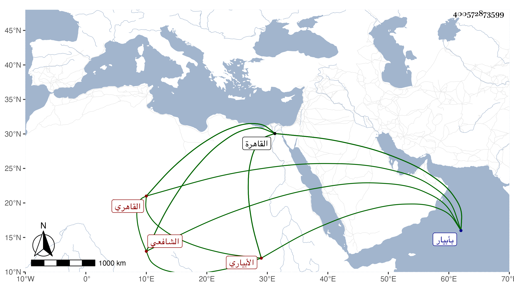

0902Sakhawi.DawLamic.ITO20230111-ara1.EIS1600.400572873599
Biography ID: 400572873599
391
محمد بن علي بن أحمد بن عبد الواحد بن عبد المغيث الشمس الأبياري ثم القاهري الشافعي ويعرف بابن المغيربي بميم مضمومة ثم معجمة مصغر نسبة لجده فإنه كان كأسلافه مغربيا ثم تحول منها انتقل أبوه عن مذهبهم ، وسمى بعضهم جد أبيه عبد المؤمن بن عبد البر بن محمد بن القسم بن ربيعة بن عبد القدوس . ومن املائه هو كتبت ما أسلفته وقال لي أنه ولد في سنة سبع وسبعين وسبعمائة بأبيار ونشأ بها فحفظ القرآن وبعض المنهاج الفرعي ثم قدم القاهرة فأكمله وألفية النحو والملحة والشذرة الذهبية والمقصورة الدريدية وبحث بأبيار ألفية ابن معطي على التاج محمد القروي وأقام بالقاهرة عند الأبناسي الكبير وبحث عليه المنهاج وكذا لازم البلقيني في بحثه والغماري والبدر الطنبدي في العرب ية وغيرها وآخرين بل بحث العضد والتلخيص على قنبر وصحب محمدا العطار خاتمة مريدي يوسف العجمي وناب عن الصدر المناوي بالقاهرة وفي أبيار وعملها عن الجلال البلقيني ثم أعرض عنه مع حلفه بالطلاق على عدم قبوله وكذا عرض عليه الزين عبد الباسط ضبط الشؤون السلطانية فأبى تعففا وتورعا مع كثرة المتحصل من هذه الجهة وكان قبل ذلك تكسب بالشهادة وقتا بعد ثبوت عدالته على العز البلقيني والد البهاء ، وباشر الشهادة بالاسطبل وصحب الظاهر جقمق قبل تملكه ، فلما استقر اختص به ومال إليه فصار من ذوي الوجاهات وأثرى وكذا اختص بولده الناصري محمد مع مزيد رغبته في التقلل من التردد إليهما ، وحج مرارا وجاور اجتمعت به غير مرة وكتبت عنه من نظمه ما طارح به شيخنا مما أودعته الجواهر والمعجم وغير ذلك . وكان خيرا دينا ساكنا منعزلا عن أكثر الناس سيما بأخرة حسن المحاضرة متقدما في حل المترجم وله في تعلمه حكاية أوردتها في المعجم مع حكاية غريبة اتفقت له مع ابن زقاعة وكونه تطارح مع المجد بن مكانس وغيره . مات وقد أسن في ليلة الأربعاء عاشر المحرم سنة تسع وستين وصلي عليه من الغد ودفن بحوش جوشن رحمه الله وإيانا .
